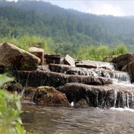
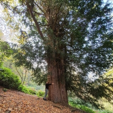

MEMLEKETİM
KISA TARİHÇE
Alaplı tarihi eserleri diğer Anadolu ilçeleri gibi bol değildir. Hatta yok denecek kadar azdır. Alaplı bu nedenle efsaneli bir karekter taşımaz. Kdz. Ereğli'ye çok yakın olmasına rağmen, ne bir kalesi, ne bir tarihi köprüsü vardır! Bu veriler ışığında Alaplı'daki yerleşimin M.S. olduğunu iddia edebiliriz. Bunun aksine 15 kilometre mesafedeki Kdz. Ereğlisi'nde ilk yerleşim M.Ö 560-500 yıllarına kadar uzanır. -Tarih kitaplarına göre Alaplı'nın ilk sakinleri Henetler dir. Daha sonra bölge, Biritanya'lılar, Frikya'lılar, Yunan'lılar, Pers'ler, Romalı'lar, Selçuklular ve Osmalıların hakimiyetine girmiştir.
EKONOMİK FAALİYETLER
TARIM
Alaplı'nın neredeyse bütün nüfusu fındık yetiştiriciliği ile uğraşmaktadır. Alaplı'ya bağlı tüm köylerin en az %60 gibi bir bölümü fındık tarlaları ile çevrilidir. Bütün bir yıl uğraş gerektiren fındık tarımı için bütün tarla sahipleri yılın ortalama 5 ayını bunun için ayırmaktadır. Alaplı Ticaret ve Sanayi Odası'nın verilerine göre Alaplı, Türkiye yıllık fındık üretiminin %1'ini oluşturmaktadır ve yıllık rekoltesi ortalama 15.000 ton olarak kayededilmiştir.
TARIM
Alaplı'nın dağlık bölgelerinde bulunan kestane ağaçlarında yetişen kestaneler Sonbaharın sonunda olgunlaşmaya başlar. Nüfusun belirli bir kesimi dağlarda yetişen kestaneyi toplar. Genellikle ilçenin iç piyasasında satılan kestane, ekonomik yönden cevize göre biraz daha karlıdır. Bunun nedeni Kestane Ağaçlarının belirli bir şahsa ait olmamasıdır. Her tarla sahibinin tarlasında ceviz ağacı bulunmasına rağmen, neredeyse çok az kişinin tarlasında kestane ağacı bulunmaktadır. Bu da kestaneyi daha bulunması zor bir yemiş yaptığından, biraz daha değerlidir.
TARIM
Fındık tarlalarının ortalama %35'inde en az bir tane ceviz ağacı bulunur. Genellikle fındık sezonu bittiğinde ceviz sezonu açılır ve nüfusun önemli bir kısmı bu sezonda ceviz toplar. Fındık kadar büyük bir ekonomik etkisi yoktur. Ancak yine de ceviz ticareti de yapılmaktadır.
ÜRETİM
Bünyesinde 750 kişi barındıran bu büyük fabrika, bölgenin büyük tekstil tesislerinden biridir. Öncesinde Dinarsu'ya bağlı olan bu tesis, artık ALK Tekstil adı altında ayrı bir firma olarak üretimine devam etmektedir. İlçe nüfusunun önemli bir kısmını istihdam eden bu tesis, Alaplı'nın en büyük fabrikası konumundadır.
ÜRETİM
Birlik Makina, anahtar teslimi "kaynaklı çelik boru" ve "profil" üreten makinelerin dizaynını, üretimini ve kurulumunu yapmaktadır. Genellikle Meslek Lisesi mezunu gençleri istihdam eden ve bu sektörde eğiten, bölgenin deneyimli ve dinamik firmasıdır. AK-AL'dan sonra Alaplı'nın en büyük ikinci fabrikasıdır. Bünyesinde 120 kişiden fazla çalışan bulunduran bu fabrika, bölge nüfusu için önemli istihdam sağlamaktadır.
ÜRETİM
Erdemir, 1960 yılında devlet tarafından kurulmuş, Türkiye'nin büyük demir-çelik fabrikalarından biridir. 2006 yılında OYAK'a devredilmesiyle birlikte OYAK Maden Metalürji A.Ş adı altında üretim yapmaktadır. Bölgenin en büyük istihdam kaynağı olmaya halen devam etmektedir.
TURİZM FAALİYETLERİ
Aslında turistik olarak Alaplı'nın pek bir statüsü bulunmamaktadır. Belirli başlı gezilecek yerleri dışında genel olarak yapısı güzeldir.
GÜMELİ
Yeşilin her tonunu barındıran doğasıyla ziyaretçilerine görsel şölen sunan, hayvan çeşitliliğiyle ilgi çeken Gümeli Ormanı yakınında yer alan 1637 metre rakımlı Bacaklı Yayla Tepesi ve dağın eteğindeki Bölüklü Yaylası, her geçen yıl artan ziyaretçi sayısıyla bölgenin dikkati çeken adresleri arasında yer alıyor.

Alaplı ilçesi Gümeli Ormanları içerisinde, taşıdığı tabii kaynak değerleri sebebi ile 2550 dekarlık alan 11 Mart 2008 tarihinde Gümeli Tabiat Anıtı olarak ilan edilmiştir. Sahanın en önemli özelliği; 1987 ve 1164 yaşlarındaki Porsuk ağaçlarının da bulunduğu tabii, yaşlı porsuk meşceresi olmasıdır. Alanda, ortalama yaşları 300 ile 500 arasında değişen çok sayıda porsuk ağacı bulunmaktadır.Gümeli Tabiat Anıtı’nın en önemli özelliği, bir ağacın binlerce yıl genç bir fidan gibi yaşamasını sağlayan eşsiz tabii özellikleridir. Bu özellikleriyle de Gümeli Tabiat Anıtı Türkiye’nin zengin tabiat turizmi alanlarının, hassas ve en değerlilerinin başında yer almaktadır.
